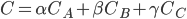

CS 184 Assignment 1: Rasterizer
Brandon Shin
Task 1
To rasterize a triangle, my initial approach was to use a for loop to conduct three line tests per sample location. This worked, but was overly complex and required me to store a bunch of values in vectors everytime the function was called. I drew some inspiration from the inside function inside of triangulation.cpp, and instead of using an array to store values, I stored the values individually instead. This did create many more variables to deal with, but I didn’t have to deal with arrays at all, and it made the point-in-triangle testing a lot simpler to calculate. I could check both winding orders using just two 3-way AND statements, rather than using boolean flags inside my for loops. I was also able to factor out certain arithmetic steps, such as the calculation of the dX and dY values, outside of the loop.
To find the bounding box of the triangle, I took the minimum and maximum coordinates from all three of the provided vertices, and paired them up. Thus, the number of samples taken is no more than the number of pixels in the triangle’s bounding box, and each sample executes in constant time, since a set number of calculations are made per pixel. Thus, the performance of my sampling function is the same, if not slightly faster than the naive bounding box implementation.
Task 2
For my supersampling implementation, I used the provided sample_buffer to store additional samples per pixel. Each pixel is sampled sample_rate + 1 times; the +1 accounts for the additional check on the pixel’s center shown by the diagram on the website. So, for an image with a sampling rate of 4, there would be width * height * (4 + 1) elements in the sample array. We iterate through the image by columns, and for each pixel, we first sample the middle of the pixel as we did in Task 1. Additionally, we sample the pixel in uniform intervals across the point sample_rate times, and store this information immediately after the center pixel’s data. For odd sampling rates, the center pixel would be counted twice; thus, for odd sampling rates I left the initial center check out of the averaging done below.
The data stored in sample_buffer is then processed in the resolve_to_framebuffer function. We iterate through the same range of x and y values, and this time we take all the supersamples for a given pixel and average together the color values. This gives us the supersampled color value of that pixel, which we set inside of our framebuffer. This process is repeated for every set of sample points we sampled in rasterize_triangle, until we have processed every point, line, and triangle data stored in sample_buffer.
The reason we perform supersampling is to reduce aliasing such as jaggies in our image; by taking the average value of sample points at a given location, we can more accurately express the color value of that location on the triangle in just one pixel by varying the intensity of its color. However, there are exponentially more calculations that need to be performed, so this increase in quality comes at a price. The diagram below shows the effects of supersampling on a particularly thin end of a triangle: while the image produced with a sampling rate of 1 has gaps and clearly defined jaggies, the images produced from sampling rates 4 and 16 are contiguous and have noticeably smoother edges.
Task 3
Here, I tried to make the cubeman look like it was running. I also changed the head color.
Task 4
The most intuitive description of barycentric coordinates to me is the geometric one, which interprets barycentric coordinates as proportional distances. Let alpha, beta, and gamma represent the barycentric coordinates of the color triangle with vertices A, B, and C, respectively. Alpha, beta, and gamma all sum up to 1, so we can interpret them as “weights” within our triangle, differing based on proximity to the three vertices. The closer we are to vertex A within the triangle, the closer the value of alpha is to 1, and the same applies to beta/B and gamma/C. We can depict this by using a triangle whose vertices have their own individual colors, and fill in the colors within the triangle using linear interpolation.
Based on our barycentric coordinates, we can compute a “weighted color” by using the formula  from lecture. In the picture below, each vertex has its own color; A is red, B is blue, and C is green.
As you can see, in points closest to vertex A, where the value of alpha is closer to 1, red is the dominant color. In the middle of the triangle, where the values of alpha, beta, and gamma are very similar, the color is an even mix between the three, which is gray. Finally, in points on the edges between A and B, we can see that there is an even mix between red and blue, giving us magenta. Since these points are farthest from C, and gamma has a value close to zero, the color green is hardly present in these colors. In this example we can see how barycentric coordinates can be used to interpolate a variety of different properties across triangles.
Task 5
Pixel sampling is performed when we want to map pixels from a texture map, called texels, onto pixels in our screen space. Textures are mapped on a u-v coordinate system, where both u and v are bounded by 0 and 1 inclusive. In order to find out which point on the x-y coordinate system that our screen space is mapped to matches the corresponding texel in texture space, we use linear interpolation to convert between the two; the desired x and y values are just the width and height of the image, interpolated over using the values of u and v respectively.
Nearest pixel sampling takes a point in the u-v coordinate space, and simply finds the nearest integer x and y coordinate within the texture that matches it. It gets the texel corresponding to this coordinate, and returns that as the sample. This often results in a very pixelated image when we try to zoom in, or magnify our image. Bilinear filtering samples the four closest texels to the desired coordinate, and weights each of their color values based on distance away from the lower-leftmost sample (using linear interpolation). It then outputs a color that is a blend of the samples, not unlike the approach we take in supersampling. This often results in a more blurry, but smoother magnified image.
To implement nearest pixel sampling, I linearly interpolated the width and height of the texture by the given u and v values, to give me a texel location. I then returned the texel corresponding to those coordinates. Bilinear sampling was more involved; I began by finding the nearest texel coordinate to the desired location, and got the centers of the four closest texels. I then found the fractional x-value distance between the leftmost closest texel and the desired location, and used that value to linearly interpolate the left and right pairs of colors together. Finally, I found the fractional y-value distance between the bottom-leftmost closest texel and the desired location, and used that value to linearly interpolate the two horizontally-lerp’ed colors together. This was the final color I returned from my bilinear sampling function.
Below are two sets of images, comparing nearest and bilinear pixel sampling at 1x and 16x supersampling rates. The difference between the two is most prominent at lower pixel sampling rates; when comparing the 1x samples, we can see that bilinear pixel sampling achieves a similar smoothing effect as supersampling, making the intersection of white lines look more seamless. The nearest sampling method, on the other hand, has clearly visible jaggies and gaps between the lines.
At the higher sampling rate of 16x, the difference is less pronounced but still present. The white lines are filled in in both samples, but there are clear instances of jaggies in the nearest pixel sampling method; however, with bilinear filtering, these jaggies are smoothed out to a decent degree. It is worth noting that for 16x sampling, this difference is only really noticeable once you use the pixel inspector. When zoomed out, the difference is hard to recognize.
Task 6
Level sampling is a technique used primarily when minification occurs, that allows us to reduce aliasing when trying to draw the texture on our screen at a lower native resolution. To do this, we employ mipmaps, which are stored versions of our texture at lower and lower resolutions. By storing these values, we can sample from the texture whose resolution most closely matches the resolution of that location on the screen. These mipmap “levels” can differ at different parts of a scene, which allows for greater flexibility and textural accuracy across an entire image.
I began by implementing the get_level function, which compares the next-closest sample locations in u-v coordinates to determine which mipmap level we should be sampling from. For nearest level sampling, I took the floor value of this result, and sampled from that level to get a color. For linear level sampling, I took both the floor and the ceiling value of the calculated level, and sampled a color from both. I then linearly interpolated between the two, based on the distance between the actual continuous value and the floor value of the level.
The three sampling techniques described and implemented thus far are: pixel sampling, level sampling, and supersampling. Supersampling often gives a very accurate result, but having additional samples per pixel drastically increases both the computational load and amount of memory used. However, if time is not an issue (which it often is), supersampling at very high rates often gives the best possible result out of the three. Pixel sampling, specifically bilinear sampling, cannot compete with the image quality produced by supersampling at very high rates, but can achieve a solid amount of antialiasing with far less required computational and memory resources. Bilinear pixel sampling is particularly useful in the magnification case of texture mapping, and it is able to produce a smoother blown-up image with far less computation than high-sample supersampling. Finally, level sampling truly shines when dealing with scenes that have areas of varying depth and texture footprint, as it takes advantage of mipmaps to accurately sample textures at different resolutions. The storage of these mipmaps is surprisingly efficient, as they only require 33% more memory than storing the original image itself. However, due to decreasing resolution sizes, it too cannot beat out supersampling at very high rates.
Here is a comparison between four different combinations of pixel and level sampling. I chose a digitally-rendered image, since it had more pronounced jaggies. As you can see, regardless of level sampling, nearest pixel sampling results in a very “blocky” image. There are slight differences between the two methods. With bilinear pixel sampling, the image becomes a lot smoother and the previously jagged and disconnected lines look seamless. Between level zero and nearest level sampling with bilinear pixel sampling, the zoomed-in area does not have many pronounced differences. However, with nearest level sampling, jaggies in thin lines and fine details within the image become less pronounced.